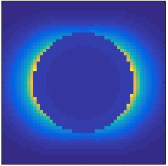

galerkinstat.solution
The solution of the quasistatic BEM solver is a galerkinstat.solution object. This object can be used to compute and plot the fields on and off the boundary, as well as for further processing in the various simulation classes.
Contents
Initialization
% initialize solution of quasistatic BEM equation % tau - vector of boundary elements % k0 - wavelength of light in vacuum % sig - surface charge distribution sol = galerkin.bemsolver( tau, k0, sig );
Methods
% electric field at points PT1 % 'relcutoff' - cutoff for refined integration % 'memax' - slice integration into bunches of size MEMAX % 'waitbar' - show waitbar during evaluation e = fields( sol, pt1, PropertyPairs ); % potential at position PT1, same PropertyPairs as for field pot = potentials( sol, pt1, PropertyPairs ); % dipole moment dip = dipole( obj );
Examples
In the following we discuss the BEM example for a gold nanosphere in water, as discussed in more length in the Getting started section.
% wavenumber of light in vacuum lambda = 600; k0 = 2 * pi / lambda; % plane wave excitation q = exc( tau, k0 ); % solve BEM equations sol = bem \ q
sol =
solution with properties:
tau: [1�284 BoundaryEdge]
k0: 0.0105
sig: [144�1 double]
We can now plot the surface charge associated with the solution vector sol using
% plot surface charge distribution plot( tau, sol.sig, 'EdgeColor', 'b' ); colormap( redblue );

To compute the fields off the particle we first have to define the positions where the fields should be computed, using a Point object.
% points where field is computed n = 51; xx = 0.8 * diameter * linspace( -1, 1, n ); [ x, y ] = ndgrid( xx ); pt = Point( tau, [ x( : ), y( : ), 0 * x( : ) ] ); % evaluate fields e = fields( sol, pt, 'relcutoff', 2, 'waitbar', 1 ); % plot fields imagesc( xx, xx, reshape( dot( e, e, 2 ), size( x ) ) .' ); axis equal tight

In the evaluation of the fields we use an integration engine for the refined integration between sufficiently close positons and boundary elements. The computation is based on Eq. (9.24) of Hohenester, Nano and Quantum Optics (Springer, 2020), together with an analytic integration of the singular integrals.
- demostatfield01.m - Electric field of optically excited nanosphere.
- demostatfield02.m - Electric field of optically excited coupled nanospheres.
Copyright 2022 Ulrich Hohenester